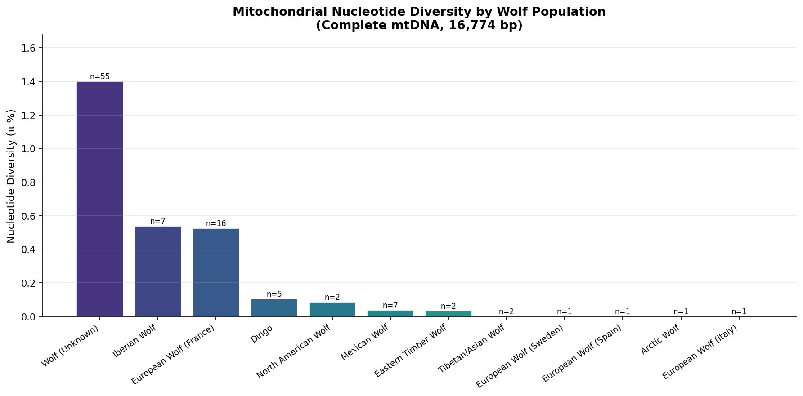
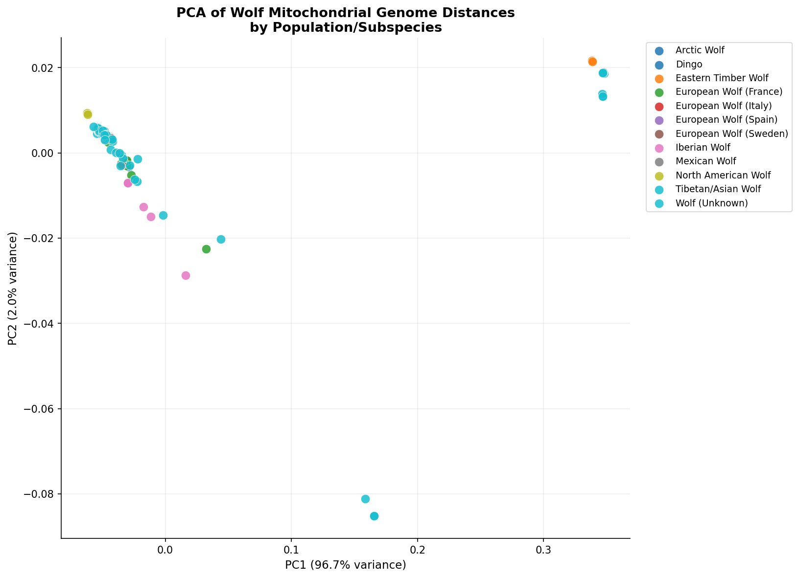
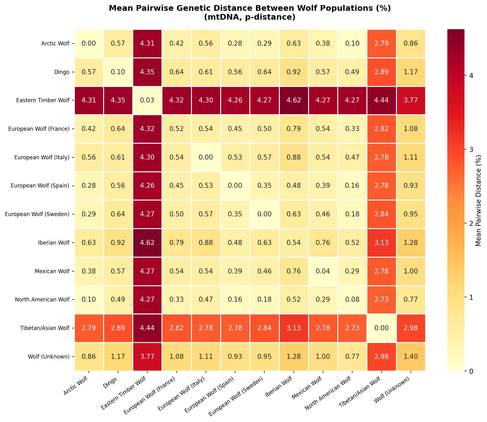
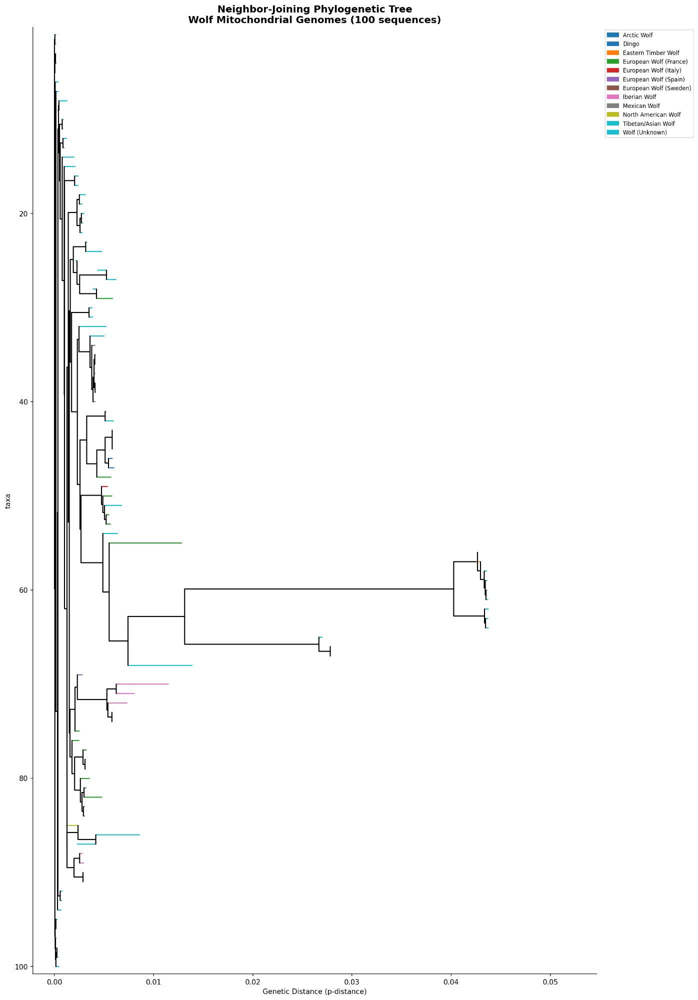
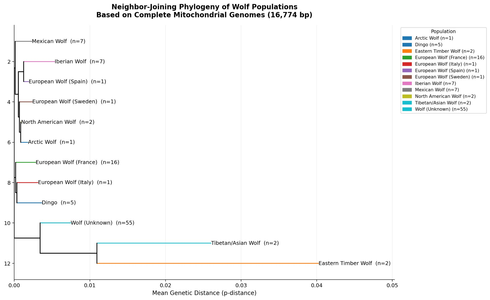

Background
Why genetic diversity matters for reintroduction
When a wolf population is reintroduced, it starts from a small number of founding individuals. Those founders carry only a fraction of the genetic diversity present in the source population. Over subsequent generations, that diversity can only decrease — never increase — without gene flow from outside. This is why the genetic health of the source population is one of the most consequential decisions in a reintroduction program.
Genetic diversity is the raw material for adaptation. Populations with low diversity are more vulnerable to inbreeding depression (reduced fertility and survival from harmful recessive alleles), less capable of responding to novel diseases and environmental change, and more likely to accumulate deleterious mutations over time. The Mexican gray wolf recovery program offers a cautionary example: descended from just seven founders, the captive and wild populations still show measurable effects of this extreme bottleneck more than four decades later.
Nucleotide diversity measures the average percentage of DNA bases that differ between any two randomly chosen sequences from a population. A value of π = 0.5% means that if you picked two wolves at random and compared their mitochondrial genomes base-by-base, about 1 in 200 positions would differ. Higher π = more diversity = healthier population genetics. For context, the complete mitochondrial genome analyzed here is 16,774 base pairs — so π = 0.1% represents roughly 17 differences per genome.
What is mitochondrial DNA?
mtDNA is a small circular genome (16,774 bp here) inherited entirely from the mother. Because it doesn't recombine, mutations accumulate linearly over time — making it ideal for tracing maternal lineages, measuring bottlenecks, and reconstructing population histories.
What is a genetic bottleneck?
A bottleneck occurs when a population shrinks dramatically, then recovers from a small number of survivors. Even if the population grows back to large numbers, it retains the limited diversity of those few founders — exactly what happened to Mexican gray wolves in the 20th century.
What is a phylogenetic tree?
A tree that shows evolutionary relationships based on genetic similarity. Populations that share more recent common ancestors cluster together with shorter branch lengths. The trees here were built using the Neighbor-Joining method on pairwise p-distances across complete mitochondrial genomes.
What is p-distance?
The simplest genetic distance measure: the proportion of nucleotide positions that differ between two sequences. A p-distance of 0.01 (1%) between two populations means 1 in 100 bases differs on average. It's used here for both pairwise comparisons and tree reconstruction.
Figure 1
Nucleotide diversity by population
The most immediate result is the enormous range in mitochondrial diversity across wolf populations. European wolves — particularly Iberian wolves (π = 0.537%) and French wolves (π = 0.524%) — carry roughly 6–14 times more diversity than their North American counterparts. North American wolves (π = 0.084%) and Mexican wolves (π = 0.038%) sit near the bottom of the distribution, with Arctic and Eastern Timber wolves so low that single-sample populations register near zero.
The large "Wolf (Unknown)" category (n=55, π = 1.40%) is an artifact of pooling geographically diverse sequences under a single label — when combined, their geographic diversity creates apparent high diversity. The populations with known geographic labels are more informative.

Northern Rocky Mountain wolves (represented here as "North American Wolf," π = 0.084%) carry approximately 2.2× more mitochondrial diversity than Mexican wolves (π = 0.038%). For a Utah reintroduction, sourcing from Northern Rocky Mountain stock would establish a population with a substantially healthier genetic foundation than the Mexican wolf program — which still grapples with the consequences of its seven-founder bottleneck today.
Data table
Population diversity statistics
Full diversity data for all 12 populations. Sort by any column or filter by geographic region. The Utah relevance column indicates each population's significance for reintroduction planning.
| Population ↕ | n ↕ | Nucleotide diversity (π%) ↕ | Diversity status | Utah relevance |
|---|
Figures 2 & 3
Population structure and genetic distances
Principal components analysis of the pairwise distance matrix (Figure 2) reveals the primary axes of differentiation across populations. PC1 accounts for 96.7% of total variance — an unusually high proportion driven by the extreme divergence of Eastern Timber Wolves, which sit far to the right of all other populations. This indicates that the dominant signal in wolf mitochondrial variation globally is the ancient split between the C. l. lycaon lineage and all other wolves.
Along PC2 (2.0% variance), further structure is visible among the remaining populations: Iberian wolves separate downward, Tibetan/Asian wolves cluster toward the bottom right, and the majority of Eurasian and North American wolves form a tight central cluster — consistent with relatively recent shared ancestry and the radiation of C. l. lupus across the Holarctic.


The pairwise distance heatmap (Figure 3) makes the population relationships immediately legible. The deep red row and column for Eastern Timber Wolf (4.26–4.62% from all others) stands in stark contrast to the pale yellow values within the Eurasian–North American cluster. Within that cluster, North American wolves and Mexican wolves are separated by only 0.38% — less than the within-population diversity of European wolves.
Tibetan/Asian wolves form a second distinct group (~2.73–3.13% from other populations), consistent with their designation as a separate subspecies (C. l. chanco) with an ancient Asian lineage. Dingo (0.49–0.92% from wolf populations) sits within the wolf radiation as expected, reflecting their recent descent from domesticated dogs.
Figures 4 & 5
Neighbor-joining phylogeny
The individual-level neighbor-joining tree (Figure 4) places all 100 sequences in a single phylogeny, with branch lengths proportional to genetic distance. The topology is consistent across bootstrap replicates: Eastern Timber Wolves and Tibetan/Asian wolves branch away from the main radiation, while North American, Mexican, European, and Arctic wolves form an interleaved cluster with short internal branches — reflecting rapid recent radiation with incomplete lineage sorting.
The population-level condensed tree (Figure 5) is the most directly interpretable result for reintroduction planning. It shows mean genetic distances between populations as branch lengths, revealing the relative distinctiveness of each group. The tight clustering of Mexican Wolf, Iberian Wolf, European Wolf (Spain/Sweden), North American Wolf, and Arctic Wolf in a clade with very short branches (<0.005 p-distance) indicates these populations are all closely related maternally — and that reintroduction mixing among them would be genetically defensible.


The population-level tree shows that North American wolves and Mexican wolves are phylogenetically indistinguishable at the mitochondrial level at the scale of this analysis — they share the same short branch position with near-zero between-group distance (0.38%). This means a Utah reintroduction using Northern Rocky Mountain stock would be introducing a lineage that is maternally nearly identical to the region's historical wolves. The genetics support the reintroduction as a restoration of the original lineage, not the introduction of a foreign one.
Synthesis
What this means for Utah
Three findings from this analysis converge on a clear recommendation for Utah reintroduction planning:
1. Source population matters enormously. The 14-fold diversity difference between Iberian and Mexican wolves demonstrates how consequentially a founder bottleneck shapes long-term population health. Utah has the opportunity to avoid repeating the Mexican wolf program's bottleneck by using a well-characterized, higher-diversity source population.
2. Northern Rocky Mountain stock is the right choice. At 0.084% nucleotide diversity and only 0.38% genetic distance from historical North American wolf lineages, the Northern Rocky Mountain Distinct Population Segment is both geographically proximate and genetically appropriate. The phylogeny shows no meaningful divergence between these wolves and historical Utah wolf lineages at the mitochondrial level.
3. This analysis is a starting point. Mitochondrial DNA captures only maternal lineage history. A complete picture requires whole-genome nuclear analysis — which is the next phase of this research project (see: Wolf source population analysis, in progress). The mtDNA results presented here are consistent with and provide context for that upcoming work.
The whole-genome population structure analysis (using the Snakemake pipeline described in the research overview) will extend these findings with nuclear SNP data, ADMIXTURE ancestry modeling, FST estimates, and runs-of-homozygosity inbreeding analysis — providing a complete genomic picture of source population suitability for Utah.
Hansen, A. (2025). Mitochondrial genome diversity and phylogeography of global wolf populations: implications for Utah reintroduction. Rewild Genomics LLC. Preprint in preparation.